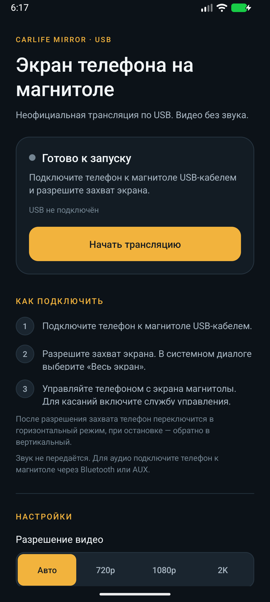
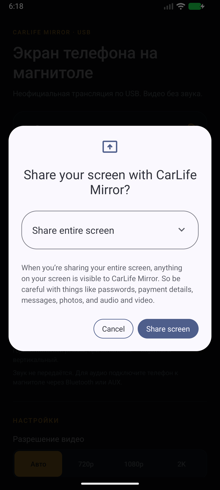
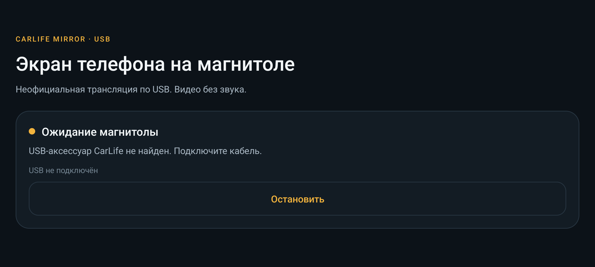
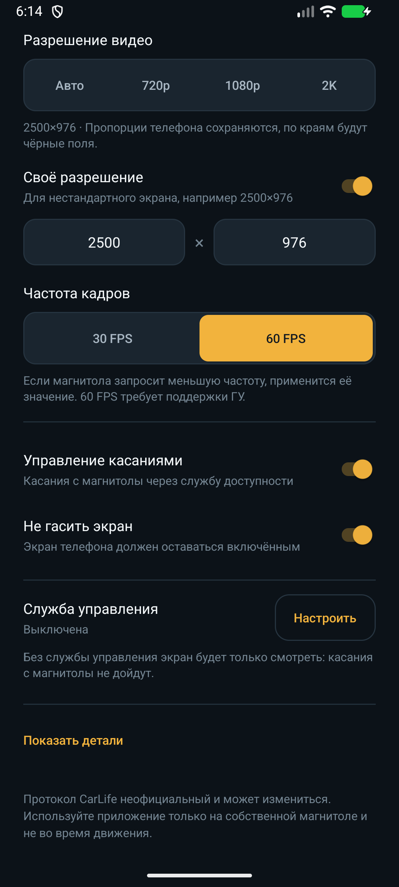
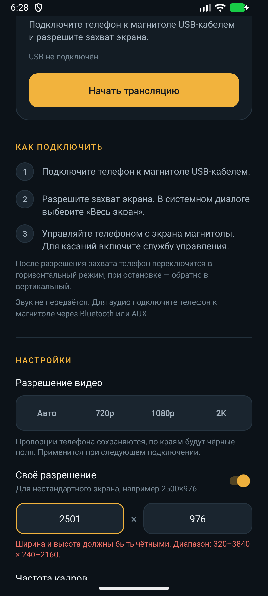
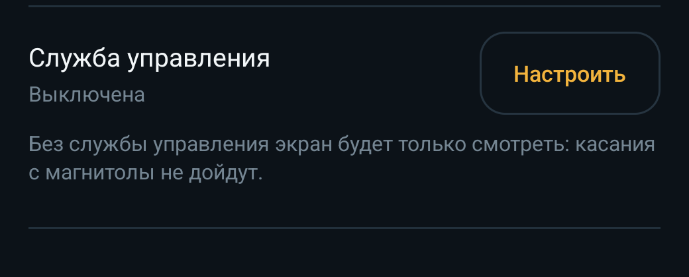
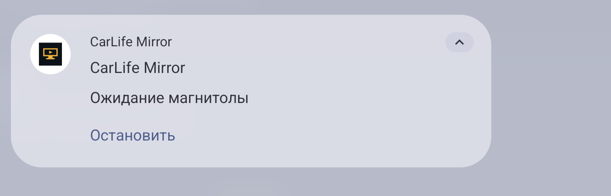
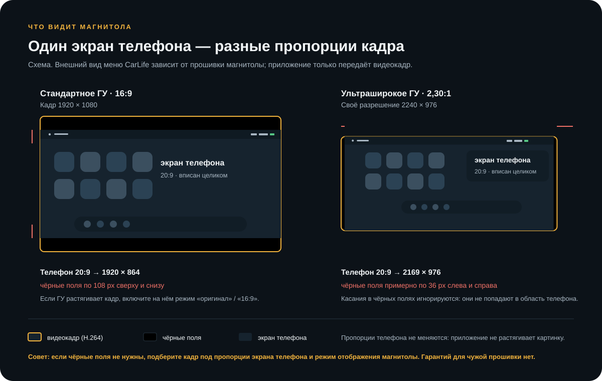

01 · Начало
Что делает CarLife Mirror
CarLife Mirror показывает экран Android-телефона на магнитоле с режимом Baidu CarLife. Телефон подключается кабелем в режиме USB-аксессуара (AOA), кодирует картинку в H.264 и передаёт её головному устройству.
Магнитола при этом работает как головное устройство CarLife (HU), а телефон — как мобильное устройство (MD). Приложение не заменяет официальное CarLife и не требует root. Это локальная трансляция видео по проводу: без интернета, облака и аккаунта.
- Транспорт
- USB AOA, только провод
- Видео
- H.264: 720p, 1080p, 2K, своё
- Кадры
- 30 или 60 FPS, верхняя граница
- Звук
- Не передаётся; Bluetooth или AUX
- Управление
- Один палец через службу доступности
- Ориентация
- Портрет до старта, ландшафт в сеансе
Приложение не строит отдельный автомобильный интерфейс и не передаёт навигационные метаданные. Магнитола видит обычный экран телефона, повёрнутый в ландшафт. Внешний вид меню CarLife зависит от прошивки головного устройства.
Эмулятор подтвердил интерфейс, разрешения, поворот, сохранение настроек и валидацию. Реальная магнитола, USB AOA, авторизация конкретной прошивки, геометрия видео и касания на железе пока не проверены. Если что-то не работает, сначала попробуйте Авто или 1080p и 30 FPS, затем смотрите «Показать детали».
02 · Подготовка
Что понадобится
- Телефон на Android 10 или новее (API 29+).
- USB-кабель с передачей данных, не charge-only. Короткий кабель надёжнее длинного.
- Магнитола с режимом CarLife, которая умеет быть USB-хостом и подключать телефон как аксессуар.
- Авторизация CarLife 2.x или RSA. Ветка 2.0;… и старая RSA-подпись поддерживаются; VW CNS3 использует RSA.
- Разрешение на захват экрана при каждом запуске. Его выдаёт системный диалог Android.
- Служба доступности — только если нужны касания с магнитолы. Для просмотра она не обязательна.
- Доступ к уведомлениям — для turn-by-turn подсказок на ГУ. Голос навигатора передаётся и без него.
| Подходит | Не поддерживается |
|---|---|
| Android 10+ | iPhone и iPad |
| USB-кабель, CarLife-магнитола | Беспроводной CarLife по Wi-Fi |
| H.264-видео, звук приложений и навигатора, один и два пальца | Микрофон, голосовое управление, телефонная книга |
| CarLife 2.x и RSA-авторизация | Шифрование видеопотока (CONTENT_ENCRYPTION) |
| Ландшафт внутри окна приложения | Android Auto, CarPlay, отдельный «автомобильный» рабочий стол |
Перед первым запуском
- Установите APK и разрешите установку из неизвестного источника, если система спросит.
- Разрешите уведомления — иначе в шторке не будет кнопки «Остановить».
- Отключите агрессивную экономию батареи для CarLife Mirror, если прошивка убивает фоновые приложения.
- Проверьте, что кабель передаёт данные: телефон должен видеть подключение, а не только заряжаться.
- Включите в магнитоле режим CarLife и используйте тот USB-порт, который предназначен для телефона.
- Для касаний заранее включите службу «CarLife Mirror: управление» в настройках доступности.
Оставьте рабочее разрешение 2240×976 и 30 FPS — это проверенный режим VW CNS3. Когда появится картинка, можно проверить 1080p, 2K, другое своё разрешение или 60 FPS. Если сразу поставить 2K/60, чёрный экран не будет понятно, с чем связан.
03 · Короткий путь
Быстрый старт
Пять шагов до картинки
- Подключите телефон к магнитоле USB-кабелем и откройте CarLife Mirror.
- Оставьте Авто и 30 FPS; при необходимости включите касания.
- Нажмите Начать трансляцию. Если Android спросит про уведомления, разрешите.
- В системном диалоге захвата выберите «Весь экран» и подтвердите.
- Дождитесь статуса «Трансляция». Остановите кнопкой в приложении или в уведомлении.
Если магнитола запускает официальное приложение CarLife, выберите CarLife Mirror в системном диалоге USB-аксессуара или отключите USB-фильтр у официального приложения. Подробнее — в разделе «Если не работает».
04 · Интерфейс
Главный экран
Главный экран — это одна прокручиваемая страница. Сверху находится статус и главная кнопка, ниже — инструкция и настройки. Во время сеанса приложение остаётся на экране, но вы можете переключать приложения телефона: магнитола увидит текущий экран.

Из чего состоит экран
- Шапка. Название, пояснение «Видео без звука» и краткое описание.
- Карточка статуса. Цветная точка, заголовок, подробность, строка метаданных (USB, модель ГУ, текущее видео), при необходимости — предупреждение об уведомлениях и прогресс подключения.
- Главная кнопка. Начать трансляцию; после ошибки — Попробовать снова; во время сеанса — Остановить.
- «Как подключить». Три шага и два пояснения: про поворот и про отсутствие звука.
- «Настройки». Разрешение, своё разрешение, FPS, касания, гашение экрана, служба управления и детали.
Под статусом может быть строка вида USB подключён · Honda CR-V · 1920x1080 @30 • по запросу ГУ. Это не настройка, а фактическое состояние: найден ли USB-аксессуар, как определилась магнитола и какой кадр реально согласован.
Если магнитола уже подключена, но захват ещё не запущен, приложение может показать «Магнитола подключена» и подсказку нажать «Начать трансляцию». Это нормально: USB-аксессуар найден, но MediaProjection ещё не разрешён.
Если уведомления выключены, под статусом появится предупреждение Уведомления выключены — кнопки «Остановить» в шторке не будет. Настроить. Нажмите на него, чтобы открыть настройки уведомлений приложения. Трансляция при этом может работать, но управлять ею из шторки не получится.
05 · Подключение
Подключение шаг за шагом
Ниже — полный сценарий первого запуска. Порядок важен: системный диалог захвата показывается в портрете, и только после подтверждения телефон переходит в ландшафт и запускает службу.
-
Подготовьте телефон и магнитолу
Разблокируйте телефон, включите экран и проверьте, что магнитола находится в режиме CarLife. Если телефон подключён к другому USB-порту (только зарядка), переключите его в порт для данных/CarLife.
-
Подключите USB-кабель
Вставьте кабель в телефон и в магнитолу. На телефоне может появиться системный запрос доступа к USB-аксессуару — разрешите его. Приложение также покажет статус «Доступ к USB», если разрешение нужно подтвердить.
-
Откройте CarLife Mirror
Приложение может открыться автоматически при подключении аксессуара. Если нет — запустите его вручную. В статусе будет «Готово к запуску» или «Магнитола подключена».
-
Выберите разрешение и FPS
Для первого раза оставьте Авто и 30 FPS. Настройки видео применяются при следующем подключении, поэтому менять их во время уже начатого сеанса бессмысленно. Касания и гашение экрана — отдельные переключатели.
-
Нажмите «Начать трансляцию»
Если на Android 13+ ещё не выдано разрешение на уведомления, система сначала спросит его. Разрешите, чтобы в шторке была кнопка остановки. Отказ не блокирует трансляцию, но уведомления не будет.
-
Подтвердите захват экрана
Появится системный диалог «Share your screen with CarLife Mirror?» (язык зависит от системы). В списке должно быть «Весь экран» / «Share entire screen». Не выбирайте «Одно приложение» / «Single app», иначе магнитола увидит только выбранное приложение. Нажмите Поделиться экраном / Share screen.

Рис. 2Системный диалог захвата. Выберите «Весь экран» и подтвердите. Язык и оформление зависят от версии Android и прошивки. Открыть в полном размере -
Дождитесь поворота и запуска службы
После подтверждения приложение само перейдёт в ландшафт и запустит foreground-службу. Если магнитола ещё не подключена или не ответила, вы увидите «Ожидание магнитолы» и кнопку Остановить. Это не ошибка: захват уже работает, но видео ещё некому отправлять.

Рис. 3После согласия телефон уже в ландшафте, но магнитола не подключена: «Ожидание магнитолы». Подключите кабель или дождитесь ответа ГУ. Открыть в полном размере -
Разрешите USB-доступ, если спросит
Если аксессуар найден, но приложение ещё не получало разрешение, появится статус «Доступ к USB» и системный запрос. Нажмите «Разрешить». При отказе появится Нет доступа к USB; подключите кабель заново и разрешите доступ.
-
Дождитесь рукопожатия и первого кадра
Статусы меняются: «Подключение» → «Рукопожатие» → «Трансляция». На магнитоле может сначала появиться заставка CarLife, затем экран телефона. Первый кадр иногда занимает несколько секунд. Если видео нет через 30 секунд, приложение сообщит причину.
-
Пользуйтесь и остановите сеанс
Переключайте приложения на телефоне — магнитола показывает текущий экран. Для остановки нажмите Остановить в приложении или действие «Остановить» в уведомлении. Телефон вернётся в портрет. Следующий запуск снова потребует подтверждения захвата.
Приложение покажет «Разрешение не выдано» и останется в портрете. Это не ошибка подключения: просто нажмите «Начать трансляцию» снова и подтвердите захват.
Система может предложить выбрать «Одно приложение». Для зеркала нужен именно весь экран. Индикатор захвата в строке состояния (красная иконка/чип) — нормальная функция Android, а не ошибка приложения.
06 · Состояния
Состояния и что они значат
Цвет точки и заголовок карточки — самый быстрый способ понять, что происходит. Красный цвет не всегда означает поломку: например, после завершения сеанса может быть красная строка с причиной.
| Статус | Что означает | Что делать |
|---|---|---|
| Готово к запуску | Захват ещё не запущен, USB-аксессуар не найден или сеанс завершён. | Подключите кабель, нажмите «Начать трансляцию». |
| Магнитола подключена | USB-аксессуар найден, но MediaProjection ещё не разрешён. | Нажмите «Начать трансляцию» и подтвердите захват. |
| Ожидание разрешения | Открыт системный диалог захвата. | Выберите «Весь экран» и подтвердите. |
| Ожидание магнитолы | Захват уже работает, но аксессуар не найден или сеанс не начат. | Проверьте кабель/порт, режим CarLife, разрешение USB; дождитесь ответа ГУ. |
| Доступ к USB | Нужно подтвердить доступ к USB-аксессуару. | Разрешите системный запрос. |
| Подключение | Аксессуар открыт, приложение ждёт рукопожатие CarLife. | Подождите; при зависании проверьте кабель и официальное приложение. |
| Рукопожатие | Идёт обмен версией протокола и возможностями. | Подождите несколько секунд. |
| Трансляция | Видео кодируется и отправляется на магнитолу. | Пользуйтесь телефоном; для остановки — кнопка или уведомление. |
| Пауза | Магнитола приостановила видео. | Подождите возобновления или остановите сеанс. |
| Отключено | Сеанс завершён с причиной: ошибка протокола, USB, кодировщика. | Прочитайте причину, при необходимости откройте «Показать детали» и переподключитесь. |
| Разрешение не выдано | Системный диалог захвата отменён. | Начните снова и выберите весь экран. |
| Остановлено | Сеанс завершён пользователем или системой. | Нажмите «Начать трансляцию» для нового сеанса. |
В строке метаданных могут быть видны:
- USB подключён / USB не подключён — найден ли аксессуар CarLife.
- Модель ГУ — если магнитола сообщила производителя и модель.
- Видео — фактический кадр, например 1920x1080 @30 • по запросу ГУ или 2240x976 @30 • из настроек.
Причины в строке видео: «из настроек» — выбран пресет или своё разрешение; «по запросу ГУ» — режим «Авто»; «запасной 1280x720» — запрос магнитолы оказался непригодным, включён безопасный кадр.
Внизу настроек есть раскрывающийся журнал: состояние, USB-аксессуар, модель ГУ, видео, количество кадров и отброшенных кадров, состояние касаний и службы доступности, путь к файлу и последние строки. Журнал пишется в файл сразу (до 400 строк в памяти, файл — до 8 МБ). Кнопка «Сохранить журнал» копирует его в Загрузки/CarLifeMirror; копия также создаётся автоматически при завершении сеанса.
07 · Настройки
Настройки и на что они влияют
Настройки сохраняются между запусками. Разрешение и FPS применяются при следующем подключении; касания и гашение экрана — сразу.

| Настройка | Значения | Когда применяется | На что влияет |
|---|---|---|---|
| Разрешение видео | Авто, 720p, 1080p, 2K | При следующем подключении | Размер кадра, который кодируется и отправляется ГУ. |
| Своё разрешение | Переключатель + ширина × высота | При следующем подключении | Точный кадр вместо пресета; по умолчанию 2240×976. |
| Частота кадров | 30 или 60 FPS | При следующем подключении | Верхняя граница FPS; для 2240×976 доступны только 30, ГУ может попросить меньше. |
| Управление касаниями | Вкл / выкл | Сразу | Передавать ли жесты с ГУ на телефон. |
| Гасить экран | Вкл / выкл | Сразу | Включённый переключатель показывает строку яркости и затемняет экран во время трансляции; выключенный яркость не меняет. |
| Яркость затемнения | 0–100% | Сразу | До какой яркости гасить экран. Строка видна только при включённом «Гасить экран». |
| Turn-by-turn на дисплей ГУ | Вкл / выкл | Сразу | Передавать манёвр, улицу, расстояние и иконку навигатора на магнитолу. Нужен доступ к уведомлениям. |
| Экспериментальный HUD (NAVI_INFO) | Вкл / выкл | Сразу | Дополнительно отправляет NAVI_INFO 0x1003B. Для проверки ГУ, которые не принимают стандартный turn-by-turn; может дублировать или игнорироваться. |
| Поле 6 HUD | Иконка / Время / Оба / Нет | Сразу | Что передавать в поле 6 NAVI_NEXT_TURN_INFO: PNG-иконку, время до манёвра или оба варианта. Некоторые ГУ ждут время вместо иконки. |
| Доступ к уведомлениям | Системное разрешение | Сразу | Без него turn-by-turn не отправляется. Голос навигатора работает и без этого доступа. |
| Служба управления | Системное разрешение | Сразу после включения | Без неё касания не доходят до телефона. |
| Уведомления | Системное разрешение | Сразу | Кнопка «Остановить» в шторке и предупреждение в приложении. |
| Показать детали | Свернуть / показать | Сразу | Диагностический журнал и кнопка сохранения в Загрузки. |
Разрешение видео
Это размер закодированного кадра, а не разрешение экрана телефона и не разрешение матрицы магнитолы. Приложение захватывает экран, вписывает его в выбранный кадр целиком и при несовпадении пропорций добавляет чёрные поля. Изображение не растягивается.
| Пресет | Кадр | Когда выбирать | Компромисс |
|---|---|---|---|
| Авто | По запросу ГУ, не выше 2560×1440 | Первый запуск, неизвестная магнитола | Лучшая совместимость; размер зависит от ГУ. |
| 720p | 1280×720 | Слабая магнитола или телефон, важна плавность | Меньше деталей и текста. |
| 1080p | 1920×1080 | Большинство Full HD-магнитол | Разумный баланс качества и нагрузки. |
| 2K | 2560×1440 (QHD) | Магнитола с QHD-экраном и сильным декодером | Больше битрейт, нагрев и требования к декодеру. |
| Своё | Любой чётный размер в допустимом диапазоне | Нестандартный широкий экран, например 2240×976 | Конкретный декодер может не поддержать. |
2K в этом приложении — это 2560×1440 (QHD), а не 2048×1080. Если магнитола называет 2K иначе, используйте «Своё разрешение» и укажите точный размер из документации ГУ.
В режиме «Авто» приложение берёт ширину и высоту из запроса магнитолы, при необходимости уменьшает их до 2560×1440 с сохранением пропорций, выравнивает до чётных значений и отправляет обратно. Если запрос непригоден, используется запасной кадр 1280×720. Это самый безопасный режим для незнакомого ГУ.
Фиксированный пресет имеет приоритет над запросом ГУ. Если декодер магнитолы не умеет такой размер, вы увидите чёрный экран или ошибку — вернитесь на «Авто»/1080p.
Частота кадров
- 30 FPS — безопасный выбор, меньше нагрузки и нагрев, обычно достаточно для интерфейса и видео.
- 60 FPS — плавнее движение и прокрутка, но требуется поддержка кодировщика телефона и декодера магнитолы, выше битрейт и нагрев.
Выбранное значение — верхняя граница. Если магнитола пришлёт запрос на меньшую частоту (например, 25 или 30 FPS), применится её значение. Если она попросит больше выбранного, приложение не превысит вашу настройку. Во время сеанса ГУ может изменить частоту в диапазоне 3–30 FPS; приложение подтверждает изменение и обновляет строку видео.
Итоговая частота зависит от ГУ, кодировщика телефона, кабеля и нагрузки. Если картинка дёргается или телефон греется, верните 30 FPS. Если после 60 FPS экран чёрный, проверьте 30 FPS и 1080p.
Битрейт приложение подбирает автоматически по размеру и FPS в разумных пределах (примерно 1,5–12 Мбит/с). Отдельной настройки битрейта нет.
Гасить экран
Переключатель «Гасить экран» управляет затемнением дисплея телефона во время трансляции. Пока он выключен, яркость остаётся обычной, и строки с процентом в настройках нет.
Включите переключатель — под ним появится настройка «Яркость затемнения». Экран будет приглушён до выбранного процента, чтобы телефон не слепил в салоне и меньше грелся. Диапазон — 0–100%, по умолчанию 1%; 0% — минимальная яркость панели, а не выключение экрана, и на части матриц визуально почти совпадает с 1%. Физическое касание телефона возвращает обычную яркость на 5 секунд, затем экран снова затемняется. Настройка применяется сразу, даже во время сеанса, а после остановки трансляции яркость всегда возвращается к исходной.
Независимо от переключателя приложение удерживает экран включённым на время сеанса, иначе MediaProjection потеряет картинку. Удержание рассчитано примерно на 6 часов за сеанс. Это расходует батарею и нагревает телефон; при длительной стоянке лучше подключить зарядку.
Для затемнения нужно разрешение «Изменение системных настроек», а для возврата яркости по касанию — включённая служба управления. Если чего-то не хватает, под ползунком появляется предупреждение.
Навигация и turn-by-turn
Голос навигатора передаётся на магнитолу вместе со звуком приложений: отдельного переключателя нет. Так подсказки Google Maps, Яндекс.Навигатора и Waze слышны в машине, даже если экран телефона лежит в кармане.
«Turn-by-turn на дисплей ГУ» отправляет на магнитолу манёвр, название улицы, расстояние и иконку. Для этого приложению нужен доступ к уведомлениям: в настройках видно, выдан ли он, кнопка «Разрешить» открывает системный экран. Без доступа голос навигатора продолжает работать, а turn-by-turn — нет.
Первое сообщение нового манёвра уходит как SHOW, изменения — как UPDATE. Пока маршрут активен, приложение раз в 5 секунд поддерживает подсказку и раз в 10 секунд повторяет SHOW, чтобы HUD не потерял её после собственной очистки. Пока навигационное уведомление висит, HUD остаётся активным; завершение происходит, когда уведомление действительно исчезло. Пустая улица заменяется коротким текстом манёвра, а слишком длинное название обрезается по границе UTF-8.
«Поле 6 HUD» выбирает содержимое шестого поля NAVI_NEXT_TURN_INFO: PNG-иконку, время до манёвра в секундах, оба варианта или ничего. По умолчанию передаётся иконка — как в прежних версиях; «Время» и «Оба» нужны для ГУ, которые ждут числовое поле, а не картинку.
«Экспериментальный HUD (NAVI_INFO)» дополнительно отправляет сообщение 0x1003B (CarlifeNaviBikeInfo) с иконкой и текстовыми полями. Это тестовый канал для магнитол, которые не принимают стандартный turn-by-turn; он может дублировать подсказки или молча игнорироваться. Включайте его отдельно, чтобы понять, какой из двух каналов понимает ваше ГУ.
Поддерживаются уведомления Google Maps, Яндекс.Навигатора, Waze, 2ГИС, HERE, TomTom, Sygic, Baidu Maps, Amap и Tencent Map. Приложение читает только навигационные уведомления и не сохраняет их текст; в памяти остаётся последний манёвр, пока идёт навигация.
CarLife-магнитола показывает turn-by-turn только если поддерживает этот канал (HUD или карточку навигации). На части ГУ сообщение игнорируется — это ограничение прошивки, а не приложения.
07a · Диагностика
Секретная диагностика автомобиля
Сделайте 10 быстрых нажатий на версию приложения справа вверху экрана настроек. Откроется диагностический экран, где можно запросить у ГУ все шесть автомобильных подписок CarLife: GPS, скорость, гироскоп, ускорение, передачу и топливо.
Экран показывает ответ ГУ на CAR_DATA_SUBSCRIBE (поддержанные модули, flag, frequency, supportFlag), счётчики и последние разобранные значения CAR_GPS, CAR_VELOCITY, CAR_GYROSCOPE, CAR_ACCELERATION, CAR_OIL, GEAR_INFO/HU_GEAR_INFO, а также последние неизвестные CMD в hex. Переключатель «Запрашивать при подключении» включает автозапрос при старте следующей сессии. Данные хранятся только в памяти.
08 · Своё разрешение
Своё разрешение: например, 2240×976
Режим «Своё разрешение» нужен для нестандартных широких экранов, когда пресеты 16:9 дают слишком большие поля или когда магнитола рассчитана на конкретный кадр. Ширина и высота — это размер видеокадра, а не разрешение телефона.

Правила
- Только чётные числа. 2240 и 976 подходят, 2241 и 975 — нет. Кодировщик H.264 работает с чётными размерами.
- Ширина: от 320 до 3840 px. Высота: от 240 до 2160 px.
- Размер должен проходить проверку H.264 по числу макроблоков. Если сочетание не проходит проверку, приложение покажет ошибку. Если размер не поддерживает декодер ГУ, вернитесь на 1080p/30.
- Включённый переключатель «Своё разрешение» перекрывает выбранный пресет. Чтобы вернуться к «Авто», 720p, 1080p или 2K, выключите переключатель и выберите пресет.
- Значения сохраняются. При выключении и повторном включении режима введённые ширина и высота не теряются; по умолчанию предлагается 2240×976.
- Настройка применяется при следующем подключении. Во время уже идущего сеанса кадр не меняется.
Если поле содержит ошибку, приложение не запускает захват: оно переводит фокус в проблемное поле, объявляет ошибку для TalkBack и прокручивает сообщение так, чтобы оно было видно над системной панелью. Исправьте число — ошибка исчезнет.
Как выглядит 2240×976 на телефоне 20:9
Широкий кадр 2240×976 имеет пропорции примерно 2,30:1. Телефон 20:9 (2,22:1) вписывается по высоте, поэтому по бокам остаются небольшие чёрные поля. Это нормально: приложение сохраняет пропорции и не растягивает картинку.
| Кадр | Область телефона | Чёрные поля |
|---|---|---|
| 1280×720 | 1280×576 | По 72 px сверху и снизу |
| 1920×1080 | 1920×864 | По 108 px сверху и снизу |
| 2560×1440 | 2560×1152 | По 144 px сверху и снизу |
| 2240×976 | ≈2169×976 | ≈36 px слева и справа |
Если телефон имеет другой аспект (19,5:9, 16:9, складной экран), поля будут другими. Приложение считает их по фактическому размеру дисплея. Системные панели и вырез тоже входят в захватываемую область, поэтому фактические поля могут немного отличаться от таблицы.
Если магнитола растягивает кадр, сначала поищите в её настройках режим «оригинал», «авто» или «16:9». Если она ожидает строго 16:9, кадр 2240×976 может быть дополнительно вписан или растянут самой магнитолой. Универсальной настройки для всех прошивок нет.
Верните Авто или 1080p и 30 FPS, остановите и начните сеанс заново. Не все декодеры ГУ поддерживают 2K, 60 FPS и нестандартные кадры; это ограничение железа, а не ошибка валидации.
09 · Управление
Касания с магнитолы
Пока служба управления не включена, приложение только показывает экран. Чтобы нажимать на магнитоле, нужна служба доступности Android: она принимает координаты касаний из CarLife и превращает их в жесты на телефоне. Служба не читает содержимое окон и не сохраняет данные.

Включение
- Откройте настройки службы
В приложении найдите раздел «Служба управления» и нажмите Настроить (если служба уже включена — Проверить). Откроются системные настройки доступности Android.
- Найдите CarLife Mirror
В списке доступных служб выберите «CarLife Mirror: управление». На разных прошивках список может называться «Установленные приложения», «Загруженные приложения» или «Скачанные сервисы».
- Включите и подтвердите
Переведите переключатель в положение «Вкл.» и подтвердите системное предупреждение. Android сообщит, что служба может управлять жестами; приложение использует это только для касаний, без чтения окон.
- Вернитесь в приложение
Статус должен стать «Включена». Убедитесь, что переключатель «Управление касаниями» тоже включён. Если статус не обновился, откройте приложение заново или нажмите «Проверить».
Что работает
- Один палец: нажатие, длинное нажатие, перетаскивание, свайп.
- Касания внутри области телефона; координаты пересчитываются через чёрные поля.
- Аппаратные кнопки Home/Back, если магнитола их присылает и служба включена.
- Ввод с экранной клавиатуры телефона: магнитола видит клавиатуру, нажатия по клавишам можно передавать как обычные касания.
Что не работает
- Мультитач, щипок двумя пальцами, сложные жесты — поддерживается только один палец.
- Касания в чёрных полях игнорируются: они не относятся к области телефона.
- Специальные жесты CarLife, которых нет в протоколе, не передаются.
- Если служба выключена, приложение остаётся в режиме просмотра; в статусе может появиться Касания приходят, но служба управления выключена.
Проверьте, что в диалоге захвата выбран весь экран, а не одно приложение. Смените разрешение и начните сеанс заново: геометрия пересчитывается при новом подключении. Если магнитола сама растягивает кадр, координаты могут не совпадать — включите на ней режим «оригинал»/«авто».
Некоторые прошивки отключают службу доступности после обновления приложения или перезагрузки. Если касания пропали, вернитесь в настройки доступности и проверьте статус «Включена».
10 · Завершение
Остановка и возврат в портрет
Остановить трансляцию можно тремя способами. В любом случае приложение закрывает сеанс, освобождает MediaProjection и возвращает телефон в портрет.
- Кнопка в приложении. На главном экране нажмите Остановить. Она видна, пока захват активен.
- Уведомление. Откройте шторку и нажмите действие «Остановить» в уведомлении CarLife Mirror.
- Системное управление захватом. Android 14+ показывает индикатор/уведомление о захвате экрана; остановка из него также завершает сеанс.

После остановки статус станет «Остановлено» с причиной: например, «Остановлено пользователем» или «Захват экрана остановлен». Настройки сохраняются, но системное разрешение на захват нужно получать заново при следующем запуске. Это требование Android, а не приложения.
Foreground-служба может продолжить работу, а управление из интерфейса станет неудобным. Используйте кнопку «Остановить» или действие в уведомлении. Если приложение всё же было принудительно остановлено, проверьте, исчез ли индикатор захвата, и при необходимости остановите его системным способом.
Если кабель отключился
При отключении USB-аксессуара сеанс закрывается без ошибки протокола: приложение переходит в «Ожидание магнитолы» и предлагает подключить кабель. Подключите его снова — приложение попробует соединиться автоматически. Если сеанс завершила сама магнитола, может появиться Сеанс завершён: … Можно подключить кабель снова.; иногда проще нажать «Остановить» и начать заново.
11 · Магнитола
Что происходит на экране магнитолы
Магнитола не получает «второй рабочий стол» и не запускает приложения телефона у себя. Она получает видеокадр H.264, в который вписан текущий экран телефона, и, если включены касания, отправляет обратно координаты жестов.
Последовательность ниже собрана по протоколу CarLife и коду приложения. На реальном ГУ мы её не проверяли: проверены только интерфейс, разрешения и сценарии на эмуляторе Android 16. Заставки, меню и порядок рукопожатия зависят от прошивки.

Упрощённая последовательность
- Магнитола замечает USB-аксессуар
Телефон объявляет себя аксессуаром CarLife. ГУ запускает свой CarLife-режим и открывает USB-соединение. Внешний вид заставки зависит от прошивки.
- Обмен версией протокола
Магнитола присылает версию CarLife. Приложение отвечает совместимостью и отправляет сведения о телефоне. В статусе на телефоне это выглядит как «Подключение» и «Рукопожатие».
- Авторизация
Поддерживаются ветка CarLife 2.x и старая RSA-подпись (её использует VW CNS3, CarLife 2.1). Если подпись не удалась, приложение пишет стек ошибки в журнал.
- Согласование видео
ГУ присылает желаемые ширину, высоту и частоту кадров. Приложение выбирает кадр по вашей настройке («Авто», пресет или своё разрешение), проверяет его и отвечает параметрами кодировщика.
- Поток H.264
Приложение запускает MediaProjection, кодирует экран и отправляет по USB служебные заголовки и видеокадры. Магнитола декодирует поток и показывает картинку. Звук в этом потоке не передаётся.
- Касания и завершение
Если служба доступности включена, ГУ присылает события касаний; приложение пересчитывает координаты и выполняет жесты на телефоне. При остановке или выходе из CarLife сеанс закрывается, телефон возвращается в портрет.
Что видно на магнитоле
- Текущий экран телефона в ландшафте: рабочего стола, приложения, настроек, клавиатуры.
- Системные панели телефона — строка состояния и панель навигации обычно входят в захват. Их вид зависит от прошивки телефона.
- Уведомления и системные диалоги, которые появляются на экране телефона, тоже могут попасть в кадр. Не показывайте конфиденциальные данные, если рядом пассажиры.
- Чёрные поля, если пропорции кадра и телефона не совпадают. Это нормально; приложение не растягивает изображение.
- Заставку или рамку CarLife, которую рисует сама магнитола. Приложение не управляет её меню и кнопками.
Чего на магнитоле не будет
- Звука — ни музыки, ни звонков, ни микрофона. Подключите телефон к ГУ по Bluetooth или AUX отдельно.
- Отдельного автомобильного интерфейса в стиле Android Auto: это зеркало экрана, а не замена CarPlay/Android Auto.
- Навигационных метаданных, названий треков и голосового управления — протокол используется только для видео и касаний.
- Защищённого DRM-видео — банковские приложения, Netflix и подобные сервисы могут показывать чёрный прямоугольник. Это ограничение Android, а не приложения.
- Корректной картинки при заблокированном экране — приложение удерживает экран включённым на время сеанса, но не мешает заблокировать телефон вручную.
После согласования видео требуется запустить кодировщик, дождаться ключевого кадра и декодировать его на ГУ. Задержка зависит от телефона, кабеля и магнитолы; обычно это несколько секунд. Если через 30 секунд видео так и не началось, приложение сообщает причину.
USB и H.264 добавляют задержку; 60 FPS может сделать движение плавнее, но не превращает зеркало в систему реального времени. Не управляйте автомобилем через телефон на ходу и не полагайтесь на задержанную картинку. Используйте приложение только как пассажир или на стоянке, соблюдая местные правила.
12 · Геометрия
Пропорции, чёрные поля и размер кадра
Приложение всегда вписывает экран телефона в выбранный кадр целиком. Если пропорции не совпадают, остаются чёрные поля. Это сделано специально: растянутая картинка выглядит «шире», но координаты касаний и текст искажаются.
| Задача | Что выбрать | Ожидаемый результат |
|---|---|---|
| Неизвестная магнитола, первый запуск | Авто + 30 FPS | Кадр по запросу ГУ, лучшее совместимое поведение. |
| Обычное Full HD-ГУ | 1080p + 30 FPS | Кадр 1920×1080; на телефоне 20:9 — поля сверху и снизу. |
| QHD-ГУ с сильным декодером | 2K + 60 FPS | 2560×1440; больше деталей, выше нагрузка. |
| Широкий экран 2240×976 | Своё 2240×976 | Кадр точно под экран; телефон вписан, поля по бокам. |
| Слабая магнитола/телефон | 720p + 30 FPS | Меньше нагрузки, ниже детализация. |
Если магнитола растягивает или обрезает кадр, ищите в её настройках отображения режимы «оригинал», «авто», «16:9» или «по размеру экрана». Приложение не может управлять масштабированием на стороне ГУ. Если магнитола ожидает строго определённый кадр, укажите его в «Своём разрешении»; но декодер всё равно может отказать.
Почему бывают поля, даже если кадр совпадает с экраном ГУ? Потому что телефон и ГУ — разные устройства. Например, кадр 2240×976 может точно совпадать с физическим экраном ГУ, но телефон 20:9 уже, поэтому внутри кадра остаются боковые поля. Приложение не обрезает интерфейс телефона, чтобы не потерять кнопки и текст.
13 · Примеры
Типичные сценарии
| Сценарий | Настройки | Что ожидать | Если не так |
|---|---|---|---|
| Первый запуск | Авто · 30 FPS · касания по желанию | ГУ присылает кадр, приложение согласует его; картинка может появиться не сразу. | Проверьте кабель, режим CarLife и разрешение USB; смотрите «Показать детали». |
| Full HD-магнитола | 1080p · 30 FPS | Кадр 1920×1080; на телефоне 20:9 поля по 108 px сверху и снизу. | Верните «Авто»; проверьте режим отображения ГУ. |
| 2K и высокая плавность | 2K · 60 FPS | 2560×1440; плавнее, но выше нагрев и требования к декодеру. | Если чёрный экран — 1080p/30; если дёргается — 30 FPS. |
| Ультраширокое ГУ | Своё 2240×976 · 30 FPS | Рабочий режим VW CNS3; телефон вписан, поля по бокам. | Проверьте чётность и диапазон; если декодер не тянет — 1080p/30. |
| Только просмотр | Авто · 30 FPS · касания выкл. | Экран показывается, нажатия с ГУ игнорируются. | Включите службу доступности и переключатель касаний. |
| Остановка из шторки | Любые настройки | Действие «Остановить» в уведомлении; телефон возвращается в портрет. | Разрешите уведомления; проверьте канал «Трансляция экрана». |
Пример: первый запуск на незнакомой магнитоле
- Подключите кабель, откройте приложение, оставьте «Авто» и 30 FPS.
- Нажмите «Начать трансляцию», разрешите уведомления и выберите «Весь экран».
- Дождитесь «Ожидание магнитолы». Если статус не меняется, проверьте, что кабель вставлен в порт CarLife, а не в зарядный.
- После «Трансляции» проверьте, что картинка целиком помещается на экране ГУ. Чёрные поля допустимы.
- Включите службу доступности и проверьте одно нажатие. Если касания смещены, не меняйте разрешение на ходу: остановите сеанс, проверьте режим отображения ГУ и начните заново.
14 · Помощь
Если не работает
Сначала определите, на каком этапе остановился сценарий: USB-аксессуар, авторизация, согласование видео, декодирование или касания. «Показать детали» внизу настроек показывает фактическое состояние и последние события.
| Симптом | Вероятная причина | Первое действие |
|---|---|---|
| Нет статуса «Магнитола подключена» | Кабель только для зарядки, не тот порт, ГУ не в CarLife, нет USB-аксессуара | Другой кабель/порт, включите CarLife в ГУ, проверьте запрос USB. |
| «Ожидание магнитолы» не меняется | Аксессуар не найден или ГУ не отвечает | Переподключите кабель, проверьте официальное CarLife, смотрите детали. |
| Чёрный экран после согласования | 2K/своё/60 FPS не поддержаны декодером; выбран не весь экран | Авто/1080p + 30 FPS; заново выберите «Весь экран». |
| Картинка растянута или обрезана | ГУ масштабирует кадр; выбран неверный режим | Режим «оригинал/авто/16:9» на ГУ; подберите кадр. |
| Дёргается, телефон греется | 60 FPS, высокое разрешение, слабый кабель, нагрузка | 30 FPS и/или 720p/1080p; закройте тяжёлые приложения. |
| Касания не работают | Служба доступности выключена или перезапустилась | Включите «CarLife Mirror: управление», вернитесь в приложение. |
| Нет кнопки «Остановить» в шторке | Уведомления запрещены | Разрешите уведомления и канал «Трансляция экрана». |
| Телефон не поворачивается | Блокировка ориентации, ограничение прошивки, другое приложение | Снимите блокировку, перезапустите приложение, начните заново. |
| Ошибка авторизации/шифрования | Не удалось подписать randomValue, неверные MD_INFO или CONTENT_ENCRYPTION | Смотрите раздел «Сообщения» и файл журнала: там режим и стек ошибки. |
Приложение не видит магнитолу или USB-аксессуар
Симптомы: статус «Готово к запуску»/«Ожидание магнитолы», сообщение USB-аксессуар CarLife не найден. Подключите кабель., в деталях «USB: нет».
Проверьте по порядку
- Кабель. Нужен кабель с передачей данных. Кабели «только зарядка» и дешёвые переходники часто не подходят. Попробуйте другой короткий кабель.
- Порт. Используйте USB-порт магнитолы, предназначенный для телефона/CarLife, а не сервисный или зарядный.
- Режим ГУ. В магнитоле должен быть запущен CarLife (или режим, который поднимает USB-аксессуар). Некоторые ГУ включают его только после выбора источника.
- Разрешение USB. На телефоне может быть запрос доступа к аксессуару. Если вы отклонили его, появится Нет доступа к USB; переподключите кабель и разрешите.
- Официальное приложение. Если установлено штатное CarLife, Android может отдать аксессуар ему. Выберите CarLife Mirror в диалоге или отключите USB-фильтр у официального приложения.
- Проверка официальным CarLife. Если штатное приложение тоже не видит ГУ, проблема в кабеле/порте/режиме ГУ, а не в CarLife Mirror.
Если USB-аксессуар виден в системе, но приложение не открывается автоматически, запустите его вручную и нажмите «Начать трансляцию»: служба перебирает доступные аксессуары.
Магнитола запускает официальное CarLife вместо CarLife Mirror
Оба приложения могут претендовать на один и тот же USB-аксессуар. Android выбирает обработчика по intent-фильтру и настройкам по умолчанию.
- При подключении кабеля выберите CarLife Mirror в системном диалоге и, если есть возможность, «Всегда».
- Откройте настройки приложений → официальное CarLife → «Открывать по умолчанию» и отключите поддержку USB-аксессуаров, если прошивка позволяет.
- Или временно отключите/удалите официальное приложение на время теста.
- После смены обработчика переподключите кабель, чтобы Android заново выдал аксессуар.
Не отключайте системные компоненты CarLife, если не уверены, что они не нужны магнитоле. Достаточно изменить обработчик USB-аксессуара для этого приложения.
Чёрный экран или видео не появляется
Статус может быть «Трансляция», но на ГУ чёрный экран; или сеанс завершается с ошибкой кодировщика.
Что проверить
- Верните совместимый режим: «Авто» или 1080p, 30 FPS. Остановите сеанс и начните заново — настройки применяются при следующем подключении.
- Выбран ли весь экран. Если в диалоге было выбрано «Одно приложение», магнитола может показывать пустоту или только часть интерфейса. Перезапустите захват и выберите «Весь экран».
- DRM/защищённый контент. Банковские приложения, Netflix и некоторые видео запрещают захват. Чёрный прямоугольник в таком приложении — ожидаемо; проверьте на обычном рабочем столе.
- Декодер ГУ. 2K, 2240×976 и 60 FPS поддерживаются не всеми прошивками. Если 1080p/30 работает, а 2K/60 нет — это ограничение ГУ.
- Кодировщик телефона. Сообщение Не удалось запустить кодировщик: … означает, что MediaCodec не принял размер/формат. Понизьте разрешение и FPS, перезапустите приложение.
- Кабель и питание. При нестабильном USB поток может обрываться. Попробуйте другой кабель/порт, уберите длинные удлинители.
Если чёрный экран только в одном приложении, проверьте его на защиту от скриншотов. Если во всех — смотрите «Показать детали» и пробуйте 720p/30.
Неверные пропорции, растяжение или слишком большие поля
Приложение не растягивает картинку: оно вписывает экран телефона в кадр и добавляет чёрные поля. Если изображение растянуто, скорее всего, его масштабирует магнитола.
- В настройках дисплея ГУ выберите «оригинал», «авто», «16:9» или «по размеру» — название зависит от прошивки.
- Проверьте, что в CarLife Mirror не включено «Своё разрешение» с неверным кадром. Для стандартного ГУ начните с «Авто» или 1080p.
- Если ГУ имеет нестандартный экран, укажите его точный кадр в «Своём разрешении». Например, 2240×976.
- Помните: даже при точном кадре ГУ телефон 20:9 уже кадра, поэтому внутри останутся боковые поля. Это не растяжение.
- Если картинка обрезана по краям, проверьте режим «зум/заполнить» на ГУ; приложение не обрезает экран телефона.
Тормоза, низкий FPS, нагрев телефона
- Понизьте FPS до 30 и/или разрешение до 1080p или 720p.
- Закройте тяжёлые игры, камеру, навигацию с 3D и другие приложения, которые нагружают GPU/CPU.
- Уберите удлинители и дешёвые переходники; используйте короткий качественный кабель.
- Снимите чехол, если телефон сильно греется; не кладите его на солнце. При перегреве система сама снижает производительность.
- Проверьте, что выбранный FPS действительно поддерживается: в строке видео видно фактическое значение, например 1920x1080 @30. 60 FPS — верхняя граница, а не гарантия.
- Если тормозит только видео на ГУ, а телефон работает нормально, вероятен слабый декодер магнитолы. 1080p/30 — самый предсказуемый режим.
Касания не работают или работают со смещением
- Проверьте раздел «Служба управления»: статус должен быть «Включена», кнопка — «Проверить».
- Убедитесь, что переключатель «Управление касаниями» включён.
- В настройках доступности Android служба «CarLife Mirror: управление» должна быть включена. После переустановки/перезагрузки её иногда нужно включать заново.
- Проверьте одно простое нажатие на рабочем столе. Если оно работает, а свайпы нет — возможно, жест не поддерживается прошивкой ГУ.
- Если касания смещены, проверьте, что захвачен весь экран, а не одно приложение; смените разрешение и начните сеанс заново.
- Если магнитола растягивает кадр, координаты могут не совпадать. Включите на ГУ режим «оригинал/авто».
Мультитач не поддерживается: щипок двумя пальцами и сложные жесты работать не будут. Это ограничение реализации, а не настройка.
Нет уведомления или кнопки «Остановить» в шторке
- Откройте настройки Android → Приложения → CarLife Mirror → Уведомления. Разрешите уведомления и канал «Трансляция экрана».
- Если в приложении видно предупреждение Уведомления выключены — кнопки «Остановить» в шторке не будет. Настроить, нажмите на него.
- На некоторых прошивках уведомления блокирует режим «Не беспокоить» или агрессивная экономия батареи. Проверьте исключения для приложения.
- Даже без уведомления остановить сеанс можно кнопкой «Остановить» в приложении или системным индикатором захвата.
Телефон не поворачивается или не возвращается в портрет
После подтверждения захвата приложение само запрашивает ландшафт, а после остановки — портрет. Оно не меняет системную блокировку поворота.
- Снимите блокировку ориентации, если прошивка учитывает её для запросов приложений.
- Проверьте, не удерживает ли другое приложение портретную ориентацию. Вернитесь на главный экран CarLife Mirror.
- Если телефон застрял в ландшафте после ошибки, нажмите «Остановить»; если кнопки нет, закройте и откройте приложение.
- На складных устройствах и планшетах поведение зависит от производителя; приложение ориентируется на телефонный сценарий.
- Поворот во время сеанса не перестраивает видеопоток: кадр согласован при подключении. Для новой геометрии остановите и начните сеанс заново.
Ошибка авторизации CarLife или требование шифрования
Эти сообщения означают проблему авторизации или ограничение шифрования, а не кабеля.
- Ошибка авторизации CarLife (RSA): … — не удалось подписать
randomValue. Проверьте журнал: там будет стек исключения и модель ГУ. - Ошибка авторизации CarLife (2.0): … — не удалось вычислить MD5-ответ. Обычно это ошибка в данных MD_INFO; приложите журнал.
- Магнитола отклонила авторизацию CarLife — ГУ не приняло ответ. Проверьте, работает ли официальное CarLife с этим телефоном; если да, это может быть особенность прошивки.
- ГУ требует шифрование контента — видео может не отобразиться — приложение не шифрует видео. Сеанс может продолжиться, но картинка, вероятно, будет чёрной. Универсального обхода нет.
- Магнитола не прислала версию протокола CarLife — за 15 секунд не пришло рукопожатие. Проверьте кабель/режим ГУ; иногда помогает отключить официальное приложение.
- Магнитола не начала видео за 30 с. Проверьте кабель и повторите. — за 30 секунд не пришёл старт видео. Смотрите журнал и совместимость ГУ.
Если официальное CarLife работает, а CarLife Mirror нет, запишите модель ГУ, версию его прошивки и строки из «Показать детали» — это поможет адаптировать протокол в будущем.
Экран гаснет, приложение останавливается или сеанс обрывается
- Приложение удерживает экран включённым на время сеанса, но примерно через 6 часов система может снова погасить его. Проверьте экономию батареи и настройки блокировки, а после разблокировки при необходимости начните сеанс заново.
- Отключите агрессивную экономию батареи для CarLife Mirror: некоторые прошивки убивают foreground-службы.
- Не блокируйте телефон вручную и не выключайте экран: MediaProjection может остановиться. Разблокируйте и начните сеанс заново.
- Если приложение было удалено из недавних задач, служба может продолжить работу; проверьте индикатор захвата. Для остановки используйте уведомление или системный индикатор.
- При перегреве телефон может ограничить кодировщик. Снизьте разрешение/FPS и дайте устройству остыть.
USB отключился или сеанс завершила магнитола
При отключении кабеля приложение переходит в «Ожидание магнитолы» и предлагает подключить кабель. Это не ошибка протокола.
- Подключите кабель снова; приложение попробует открыть аксессуар автоматически.
- Если появилось Сеанс завершён: … Можно подключить кабель снова., проверьте причину в деталях. Иногда помогает нажать «Остановить» и начать заново.
- Если магнитола завершила сеанс (например, вы вышли из CarLife), запустите CarLife на ГУ и подключитесь снова.
- Если USB-аксессуар остаётся подключённым, но новый сеанс не стартует, отключите и подключите кабель или перезапустите приложение.
Если ничего не помогло
- Проверьте те же кабель и порт с официальным CarLife: так вы отделите проблему приложения от проблемы ГУ.
- Перезагрузите телефон и магнитолу (полностью, не только экран).
- Попробуйте другой кабель, другой USB-порт и другой телефон с Android 10+.
- Верните «Авто»/1080p и 30 FPS; отключите своё разрешение.
- Остановите сеанс, отключите кабель, очистите приложение из недавних задач и начните заново.
- Сделайте снимок «Показать детали» и запишите модель телефона, версию Android, модель/прошивку ГУ, версию CarLife, кабель и выбранные настройки.
Журнал пишется в файл в Android/data/com.carlifemirror.app/files/logs/ и дублируется в logcat с тегом CarLifeMirror. При завершении сеанса копия автоматически сохраняется в Загрузки/CarLifeMirror; вручную — кнопкой «Сохранить журнал». В журнал не попадают координаты касаний, тексты уведомлений и идентификаторы устройства. Для диагностики полезны строки о версии протокола, режиме авторизации, выбранном кадре, CSD/SPS/PPS, статистике кадров, очереди USB и причинах закрытия сеанса.
15 · Справочник
Сообщения и что они значат
| Сообщение | Что значит | Что делать |
|---|---|---|
| USB-аксессуар CarLife не найден. Подключите кабель. | Захват работает, но USB-аксессуар не обнаружен. | Проверьте кабель, порт, режим CarLife, разрешение USB. |
| Нет доступа к USB Разрешите доступ к аксессуару CarLife. | Системный запрос USB отклонён. | Переподключите кабель, разрешите доступ. |
| USB недоступен Не удалось открыть аксессуар CarLife. | Аксессуар найден, но открыть его не удалось. | Переподключите, закройте официальное CarLife, перезапустите приложение. |
| Магнитола не прислала версию протокола CarLife | За 15 секунд не пришло рукопожатие. | Проверьте кабель/режим ГУ; отключите перехват официальным приложением. |
| Ошибка авторизации CarLife (RSA): … | Не удалось подписать randomValue. | Проверьте журнал; сообщите модель ГУ. |
| Магнитола не начала видео за 30 с. Проверьте кабель и повторите. | За 30 секунд не пришёл старт видео. | Проверьте совместимость; смотрите журнал. |
| Магнитола отклонила авторизацию CarLife | ГУ не приняло ответ авторизации. | Проверьте официальное CarLife; запишите модель/прошивку. |
| ГУ требует шифрование контента — видео может не отобразиться | ГУ запросило CONTENT_ENCRYPTION, приложение не шифрует видео. | Вероятен чёрный экран; универсального обхода нет. |
| Не удалось запустить кодировщик: … | MediaCodec не принял размер/формат. | Снизьте разрешение/FPS, перезапустите сеанс. |
| Разрешение не выдано Без захвата экрана трансляция невозможна. | Диалог MediaProjection отменён. | Начните снова, выберите «Весь экран». |
| Касания приходят, но служба управления выключена | ГУ отправляет касания, но accessibility-служба недоступна. | Включите службу, вернитесь в приложение. |
| Сеанс завершён: … Можно подключить кабель снова. | Сеанс закрыт с причиной; захват ещё активен. | Прочитайте причину; переподключите кабель или начните заново. |
| Остановлено пользователем | Пользователь нажал «Остановить». | Начните новый сеанс при необходимости. |
| Захват экрана остановлен | MediaProjection остановлен системой. | Начните заново, разрешите захват. |
| Не удалось запустить сервис | Foreground-служба не стартовала. | Перезапустите приложение/телефон; проверьте экономию батареи. |
| Захват экрана недоступен Система не разрешила открыть диалог захвата: … | Система не смогла показать диалог MediaProjection. | Перезапустите приложение/телефон, проверьте ограничения прошивки. |
| Магнитола завершила сеанс | ГУ вышло из CarLife или закрыло поток. | Запустите CarLife на ГУ, подключитесь снова. |
| USB отключён | Кабель отсоединён; сеанс закрыт спокойно. | Подключите кабель снова. |
16 · Границы
Ограничения
- Только USB. Беспроводной CarLife по Wi-Fi не поддерживается.
- Только видео. Звук, микрофон, голосовое управление и навигационные метаданные не передаются. Аудио — через Bluetooth или AUX.
- Шифрование видеопотока (
CONTENT_ENCRYPTION=1) не реализовано. - Один палец. Мультитач и сложные жесты не поддерживаются.
- 2K, 60 FPS и свои размеры должны поддерживаться кодировщиком телефона и декодером ГУ. Гарантий для конкретной прошивки нет.
- Ориентация. Ландшафт удерживается окном CarLife Mirror; другие приложения могут принудительно открываться в портрете. Системную блокировку поворота приложение не меняет.
- Поворот во время сеанса не перестраивает видеопоток. Для новой геометрии нужен новый сеанс.
- Защищённый контент (DRM, банковские приложения) может быть чёрным — это политика Android/приложения.
- Удержание экрана включённым рассчитано примерно на 6 часов за сеанс; при длительной поездке может потребоваться перезапуск.
- Нет настройки DPI. Используется системный масштаб Android; отдельного DPI в приложении нет.
- Целевая магнитола — Volkswagen CNS3. Режим 2240×976 @ 30 FPS и RSA-авторизация взяты из проверенного Headswap 2.6.0; другие прошивки могут вести себя по-разному.
- Приложение не опубликовано в магазинах. Оно собирается из исходников и распространяется как есть, под GPL-3.0.
17 · Безопасность
Приватность и безопасность
- Нет интернета. Приложение не запрашивает доступ в сеть и не отправляет данные на серверы.
- Захват только после согласия. MediaProjection запускается лишь после системного диалога; при отмене трансляция не начинается.
- Видео идёт по USB. Кадры кодируются на телефоне и передаются подключённой магнитоле. Приложение не пишет видео на диск.
- Настройки локальны. Разрешение, FPS, касания и гашение экрана хранятся в SharedPreferences на телефоне.
- Файловый журнал. Пишется локально в app-specific storage, без координат касаний, текстов уведомлений и идентификаторов устройства. При завершении сеанса копируется в Загрузки/CarLifeMirror; копию можно создать кнопкой. Старые файлы удаляются автоматически (до 10).
- Служба доступности используется только для отправки жестов. Она не читает содержимое окон и не сохраняет данные; в конфигурации нет запроса содержимого окон.
- Конфиденциальность на экране. Всё, что видно на телефоне, может попасть на магнитолу: уведомления, переписка, пароли, банковские приложения. Не включайте трансляцию при посторонних и не оставляйте телефон с конфиденциальными данными без присмотра.
- Используйте на собственном ГУ. Не подключайтесь к чужим магнитолам и не транслируйте экран в недоверенной среде.
- Не во время движения. Приложение не заменяет штатную систему автомобиля; ответственность за безопасность и соблюдение правил остаётся на пользователе.
18 · Вопросы
FAQ
Нужен ли root или разблокировка загрузчика?
Нет. Приложение использует обычные API Android: MediaProjection, MediaCodec, OpenGL, USB-аксессуар и службу доступности. Root не требуется.
Нужен ли интернет?
Нет. Приложение не имеет разрешения на интернет и не отправляет данные. Всё работает локально по USB.
Можно ли подключиться по Wi-Fi?
Нет. Эта версия поддерживает только USB AOA. Беспроводной CarLife не реализован.
Передаётся ли звук?
Нет. Ни музыка, ни звонки, ни микрофон. Подключите телефон к магнитоле по Bluetooth или AUX отдельно. Громкость регулируется на телефоне/ГУ в зависимости от аудиоподключения.
Почему 2K — это 2560×1440?
В приложении «2K» означает QHD 2560×1440, а не 2048×1080. Если ваша магнитола называет 2K иначе, используйте «Своё разрешение» с точным размером из её документации.
Почему 60 FPS не даёт 60 кадров?
60 FPS — верхняя граница. Магнитола может запросить 30 или 25 FPS, кодировщик телефона может не выдать 60 при высоком разрешении, а декодер ГУ может не поддерживать режим. Фактическое значение видно в строке видео.
Есть ли настройка DPI?
Нет. Используется системный масштаб Android. Менять DPI на телефоне ради магнитолы не рекомендуется: это влияет на все приложения и может ухудшить интерфейс.
Можно ли управлять телефоном двумя пальцами?
Нет. Поддерживается один палец: нажатие, длинное нажатие, свайп, перетаскивание. Мультитач и щипок не реализованы.
Почему на магнитоле видны чёрные поля?
Приложение сохраняет пропорции телефона и вписывает экран целиком. Если кадр шире или уже телефона, остаются поля. Это нормально; изображение не растягивается. Режим масштабирования на стороне ГУ может добавить свои поля.
Почему некоторые приложения чёрные?
Android запрещает захват защищённого контента (DRM), а некоторые банковские приложения блокируют скриншоты. Приложение не может это обойти. Проверьте на обычном рабочем столе или в другом приложении.
Можно ли использовать Android Auto или CarPlay?
Нет. Приложение работает только с CarLife и передаёт зеркало экрана, а не автомобильный интерфейс Android Auto/CarPlay.
Работает ли на iPhone?
Нет. Нужен Android 10+ и APK. iOS-версии нет.
Можно ли смотреть видео/играть?
Технически экран транслируется, но управлять телефоном с магнитолы во время движения опасно и может быть незаконно. Приложение не предназначено для использования водителем на ходу. Защищённое DRM-видео при этом может быть чёрным.
19 · Перед обращением
Чек-лист и сбор диагностики
Быстрый чек-лист
- Android 10+, приложение установлено и открывается.
- Кабель с передачей данных, порт CarLife, режим CarLife включён.
- Уведомления разрешены, канал «Трансляция экрана» не отключён.
- Для касаний: служба «CarLife Mirror: управление» включена, переключатель касаний включён.
- Выбраны «Авто»/1080p и 30 FPS для первого теста.
- Своё разрешение выключено или содержит чётные значения в допустимом диапазоне.
- Официальное CarLife не перехватывает USB-аксессуар.
- Телефон разблокирован, экран не гаснет, экономия батареи не убивает службу.
- В диалоге захвата выбран «Весь экран», а не одно приложение.
- USB-доступ разрешён; при отказе приложение показывает «Нет доступа к USB».
Что приложить к описанию проблемы
- Модель телефона, версия Android, прошивка (если важна).
- Модель магнитолы, версия прошивки/год, версия CarLife.
- Кабель и порт; работает ли официальное CarLife с этим телефоном.
- Выбранные разрешение/FPS и включено ли своё разрешение.
- Точный статус и подробность из приложения; снимок «Показать детали» и файл журнала из Загрузок.
- На каком шаге остановились: USB, рукопожатие, авторизация, видео, касания.
- Если возможно — журнал из
Загрузки/CarLifeMirrorили logcat с тегом CarLifeMirror.
Целевая магнитола — Volkswagen CNS3 (CarLife 2.1). Начните с рабочего режима 2240×976 @ 30 FPS, затем проверяйте 1080p, 2K, своё разрешение или 60 FPS по одному изменению. Так причина чёрного экрана или тормозов будет понятна.